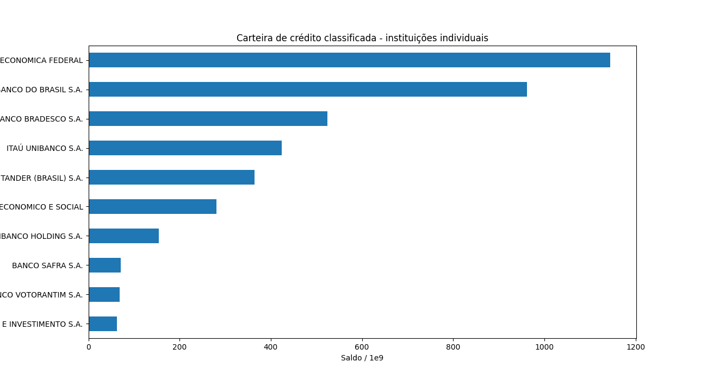
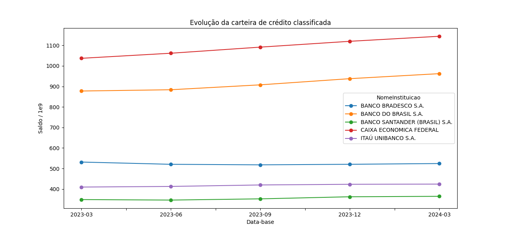

IFData¶
A API IFData do Banco Central do Brasil pode ser acessada pela classe
bcb.IFDATA.
Os dados são obtidos a partir do conjunto IFData - Dados selecionados
de instituições financeiras do portal de dados abertos do BCB. A
documentação oficial informa que o IFData divulga, em formato aberto,
relatórios trimestrais de instituições autorizadas a funcionar e em
operação normal. As bases de origem citadas pelo BCB são o SCR
(Sistema de Informações de Créditos) e o Cosif
(Plano Contábil das Instituições do Sistema Financeiro Nacional).
Segundo a metodologia do IFData, os relatórios trimestrais são disponibilizados 60 dias após as datas-bases de março, junho e setembro, e 90 dias após a data-base de dezembro. O portal informa início em março de 2000 e periodicidade trimestral.
Primeiro acesso¶
O serviço IFData é uma API OData com três FunctionImports. O método
describe mostra os nomes dos endpoints, parâmetros e colunas.
Os blocos ipython desta página são executados no build da
documentação. Blocos code são exemplos para copiar e
adaptar, mas não são executados durante o build.
In [1]: from bcb import IFDATA
In [2]: ifdata = IFDATA(timeout=120)
In [3]: ifdata.describe(full=False)
FunctionImports:
ListaDeRelatorio
IfDataCadastro
IfDataValores
Os endpoints disponíveis são:
ListaDeRelatorioLista os relatórios existentes no serviço. Retorna
NomeRelatorioeNumeroRelatorio.IfDataCadastroRetorna o cadastro de instituições e conglomerados para uma data-base. Recebe o parâmetro
AnoMes.IfDataValoresRetorna os valores de um relatório em formato longo. Recebe os parâmetros
AnoMes,TipoInstituicaoeRelatorio.
Listando relatórios¶
O primeiro passo prático é obter o catálogo de relatórios e usar a coluna
NumeroRelatorio como parâmetro Relatorio em IfDataValores.
Apesar de o parâmetro se chamar Relatorio, o valor esperado é o
número retornado em NumeroRelatorio como string.
In [4]: relatorios = (
...: ifdata.get_endpoint("ListaDeRelatorio")
...: .query()
...: .collect()
...: )
...:
In [5]: relatorios[["NumeroRelatorio", "NomeRelatorio"]]
Out[5]:
NumeroRelatorio NomeRelatorio
0 1 Resumo
1 2 Ativo
2 3 Passivo
3 4 Demonstração de Resultado
4 5 Informações de Capital
5 6 Segmentação
6 7 Carteira de Crédito Ativa - Por indexador
7 8 Carteira de crédito ativa - por nível de risco...
8 9 Carteira de crédito ativa - por região geográfica
9 10 Carteira de crédito ativa - quantidade de clie...
10 11 Carteira de crédito ativa Pessoa Física - moda...
11 12 Carteira de crédito ativa Pessoa Jurídica - p...
12 13 Carteira de crédito ativa Pessoa Jurídica - mo...
13 14 Carteira de crédito ativa Pessoa Jurídica - po...
14 15 Movimentação de Câmbio no Trimestre
15 16 Carteira de crédito ativa - por carteiras de i...
Na versão atual do serviço, alguns relatórios relevantes são:
"1": Resumo"7": Carteira de Crédito Ativa - Por indexador"8": Carteira de crédito ativa - por nível de risco da operação"9": Carteira de crédito ativa - por região geográfica"10": Carteira de crédito ativa - quantidade de clientes e de operações"11": Carteira de crédito ativa Pessoa Física - modalidade e prazo de vencimento"12": Carteira de crédito ativa Pessoa Jurídica - por atividade econômica (CNAE)"13": Carteira de crédito ativa Pessoa Jurídica - modalidade e prazo de vencimento"14": Carteira de crédito ativa Pessoa Jurídica - por porte do tomador
Use sempre ListaDeRelatorio quando for construir uma análise nova,
pois a disponibilidade de relatórios pode mudar ao longo do tempo.
Parâmetros principais¶
AnoMesData-base no formato
AAAAMM, por exemplo202403para março de 2024. O IFData é trimestral; na prática, use meses03,06,09e12.TipoInstituicaoNível de consolidação usado no relatório. No endpoint OData, os códigos práticos são:
1: Conglomerados Prudenciais e Instituições Independentes.2: Conglomerados Financeiros e Instituições Independentes.3: Instituições Individuais.
A interface web do IFData usa ids internos diferentes nos seus arquivos, como
1009,1005e1006. Esses ids não são os códigos esperados porIfDataValoresnopython-bcb.RelatorioCódigo do relatório, como string, retornado por
ListaDeRelatorio. Exemplo:"1"paraResumoe"11"para o relatório de carteira de crédito ativa de pessoa física por modalidade e prazo.
Consultando cadastro¶
O cadastro ajuda a interpretar CodInst e a distinguir instituições
individuais de conglomerados. A coluna Data é convertida para
datetime64 pelo python-bcb.
In [6]: cadastro_ep = ifdata.get_endpoint("IfDataCadastro")
In [7]: cadastro = (
...: cadastro_ep.query()
...: .parameters(AnoMes=202403)
...: .limit(10)
...: .collect()
...: )
...:
In [8]: cadastro[
...: [
...: "Data",
...: "CodInst",
...: "NomeInstituicao",
...: "Td",
...: "CodConglomeradoFinanceiro",
...: "CodConglomeradoPrudencial",
...: ]
...: ]
...:
Out[8]:
Data CodInst ... CodConglomeradoFinanceiro CodConglomeradoPrudencial
0 2024-03-01 C0041856 ... C0041856 C0080312
1 2024-03-01 C0080312 ... C0041856 C0080312
2 2024-03-01 C0052302 ... C0052302 C0081579
3 2024-03-01 C0051956 ... C0051956 C0083694
4 2024-03-01 C0083694 ... C0051956 C0083694
5 2024-03-01 01542356 ... NaN NaN
6 2024-03-01 C0051949 ... C0051949 C0081256
7 2024-03-01 C0081256 ... C0051949 C0081256
8 2024-03-01 09978168 ... NaN NaN
9 2024-03-01 28195667 ... C0041856 C0080312
[10 rows x 6 columns]
Na versão atual do pacote, se você usar select em IfDataCadastro,
mantenha a coluna Data na seleção. A conversão automática de datas
desse endpoint espera essa coluna no resultado.
Consultando valores¶
IfDataValores retorna os dados em formato longo: cada linha identifica
instituição, relatório, conta/coluna e valor em Saldo. Para montar uma
tabela analítica, normalmente é necessário filtrar NomeColuna ou
Conta e depois fazer pivot ou merge com o cadastro.
O exemplo abaixo obtém a métrica Carteira de Crédito Classificada do
relatório Resumo para conglomerados prudenciais e instituições
independentes na data-base de março de 2024.
In [9]: valores_ep = ifdata.get_endpoint("IfDataValores")
In [10]: credito_resumo = (
....: valores_ep.query()
....: .parameters(AnoMes=202403, TipoInstituicao=1, Relatorio="1")
....: .filter(valores_ep.NomeColuna == "Carteira de Crédito Classificada")
....: .orderby(valores_ep.Saldo.desc())
....: .limit(10)
....: .collect()
....: )
....:
In [11]: cadastro_completo = cadastro_ep.query().parameters(AnoMes=202403).collect(timeout=120)
In [12]: credito_resumo = credito_resumo.merge(
....: cadastro_completo[["CodInst", "NomeInstituicao"]],
....: on="CodInst",
....: how="left",
....: )
....:
In [13]: credito_resumo[["NomeInstituicao", "AnoMes", "NomeColuna", "Saldo"]]
Out[13]:
NomeInstituicao ... Saldo
0 CAIXA ECONÔMICA FEDERAL - PRUDENCIAL ... 1.145327e+12
1 BB - PRUDENCIAL ... 1.002459e+12
2 ITAU - PRUDENCIAL ... 9.035385e+11
3 BRADESCO - PRUDENCIAL ... 6.367062e+11
4 SANTANDER - PRUDENCIAL ... 5.280337e+11
5 BNDES - PRUDENCIAL ... 3.158338e+11
6 BTG PACTUAL - PRUDENCIAL ... 1.326218e+11
7 SAFRA - PRUDENCIAL ... 1.199716e+11
8 NU PAGAMENTOS - PRUDENCIAL ... 9.427453e+10
9 VOTORANTIM - PRUDENCIAL ... 7.469943e+10
[10 rows x 4 columns]
Diferenças entre datasets¶
O resultado de IfDataValores muda conforme a combinação de
AnoMes, TipoInstituicao e Relatorio. A lista de relatórios é
um catálogo geral; ela não garante que toda combinação de tipo de
instituição e data-base terá dados.
Por exemplo, para AnoMes=202403 a chamada abaixo retornava dados para
TipoInstituicao=2 no relatório "11", mas retornava DataFrame
vazio para TipoInstituicao=1 e TipoInstituicao=3. Isso não indica
necessariamente erro de rede; normalmente indica que aquela combinação de
parâmetros não existe no conjunto divulgado.
In [14]: pf_tipo_2 = (
....: valores_ep.query()
....: .parameters(AnoMes=202403, TipoInstituicao=2, Relatorio="11")
....: .filter(valores_ep.NomeColuna == "Total da Carteira de Pessoa Física")
....: .limit(10)
....: .collect()
....: .merge(
....: cadastro_completo[["CodInst", "NomeInstituicao"]],
....: on="CodInst",
....: how="left",
....: )
....: )
....:
In [15]: pf_tipo_2[
....: ["TipoInstituicao", "NomeInstituicao", "NomeRelatorio", "NomeColuna", "Saldo"]
....: ]
....:
Out[15]:
TipoInstituicao ... Saldo
0 2 ... 2.712441e+08
1 2 ... 6.148027e+08
2 2 ... 0.000000e+00
3 2 ... 2.496343e+08
4 2 ... 8.293921e+05
5 2 ... 2.427435e+06
6 2 ... 0.000000e+00
7 2 ... 7.439081e+07
8 2 ... 0.000000e+00
9 2 ... 7.978122e+07
[10 rows x 5 columns]
Ao explorar um relatório novo, comece com limit e filtros seletivos.
Depois verifique NomeRelatorio, NumeroRelatorio, NomeColuna
e DescricaoColuna antes de agregar valores.
Comparando instituições com dados de crédito¶
O exemplo abaixo compara as maiores carteiras de crédito classificadas
entre instituições individuais em março de 2024. Usamos
TipoInstituicao=3 para evitar misturar CNPJs individuais com
conglomerados.
In [16]: import pandas as pd
In [17]: ANO_MES = 202403
In [18]: TIPO_INSTITUICAO = 3
In [19]: RELATORIO_RESUMO = "1"
In [20]: valores_ep = ifdata.get_endpoint("IfDataValores")
In [21]: cadastro_ep = ifdata.get_endpoint("IfDataCadastro")
In [22]: credito = (
....: valores_ep.query()
....: .parameters(
....: AnoMes=ANO_MES,
....: TipoInstituicao=TIPO_INSTITUICAO,
....: Relatorio=RELATORIO_RESUMO,
....: )
....: .filter(valores_ep.NomeColuna == "Carteira de Crédito Classificada")
....: .orderby(valores_ep.Saldo.desc())
....: .limit(10)
....: .collect()
....: )
....:
In [23]: comparativo = (
....: credito.merge(
....: cadastro_completo[["CodInst", "NomeInstituicao", "Tcb", "Td", "Sr"]],
....: on="CodInst",
....: how="left",
....: )
....: .assign(
....: Saldo_bilhoes=lambda df: df["Saldo"] / 1e9,
....: Participacao_top10=lambda df: df["Saldo"] / df["Saldo"].sum(),
....: )
....: [
....: [
....: "NomeInstituicao",
....: "Saldo_bilhoes",
....: "Participacao_top10",
....: "Tcb",
....: "Td",
....: "Sr",
....: ]
....: ]
....: )
....:
In [24]: comparativo
Out[24]:
NomeInstituicao Saldo_bilhoes ... Td Sr
0 CAIXA ECONOMICA FEDERAL 1144.247533 ... I S1
1 BANCO DO BRASIL S.A. 962.121150 ... I S1
2 BANCO BRADESCO S.A. 524.134927 ... I S1
3 ITAÚ UNIBANCO S.A. 424.029001 ... I S1
4 BANCO SANTANDER (BRASIL) S.A. 364.386374 ... I S1
5 BANCO NACIONAL DE DESENVOLVIMENTO ECONOMICO E ... 281.124087 ... I S2
6 ITAÚ UNIBANCO HOLDING S.A. 154.194902 ... I S1
7 BANCO SAFRA S.A. 71.531846 ... I S2
8 BANCO VOTORANTIM S.A. 68.560584 ... I S2
9 AYMORÉ CRÉDITO, FINANCIAMENTO E INVESTIMENTO S.A. 62.504463 ... I S1
[10 rows x 6 columns]
In [25]: ax = comparativo.sort_values("Saldo_bilhoes").plot.barh(x="NomeInstituicao", y="Saldo_bilhoes", legend=False, figsize=(13, 7), xlabel="Saldo / 1e9", ylabel="", title="Carteira de crédito classificada - instituições individuais")
In [26]: ax.figure.subplots_adjust(left=0.42)
In [27]: ax;

O campo Saldo é o valor numérico retornado pela API. A unidade e a
forma de apresentação podem variar por relatório; antes de publicar
valores monetários, confira DescricaoColuna e a composição/nota do
relatório na interface IF.data.
Evolução temporal¶
Para analisar evolução temporal, consulte poucas datas-bases e mantenha o
mesmo TipoInstituicao e o mesmo NomeColuna ao longo da série. O
exemplo abaixo acompanha cinco instituições individuais em cinco
trimestres.
In [28]: import pandas as pd
In [29]: from bcb import IFDATA
In [30]: ifdata = IFDATA(timeout=120)
In [31]: valores_ep = ifdata.get_endpoint("IfDataValores")
In [32]: cadastro_ep = ifdata.get_endpoint("IfDataCadastro")
In [33]: filtro_codigos = ((valores_ep.CodInst == "00360305") | (valores_ep.CodInst == "00000000") | (valores_ep.CodInst == "60701190") | (valores_ep.CodInst == "60746948") | (valores_ep.CodInst == "90400888"))
In [34]: credito_202303 = valores_ep.query().parameters(AnoMes=202303, TipoInstituicao=3, Relatorio="1").filter(valores_ep.NomeColuna == "Carteira de Crédito Classificada", filtro_codigos).collect().assign(AnoMes=202303)
In [35]: credito_202306 = valores_ep.query().parameters(AnoMes=202306, TipoInstituicao=3, Relatorio="1").filter(valores_ep.NomeColuna == "Carteira de Crédito Classificada", filtro_codigos).collect().assign(AnoMes=202306)
In [36]: credito_202309 = valores_ep.query().parameters(AnoMes=202309, TipoInstituicao=3, Relatorio="1").filter(valores_ep.NomeColuna == "Carteira de Crédito Classificada", filtro_codigos).collect().assign(AnoMes=202309)
In [37]: credito_202312 = valores_ep.query().parameters(AnoMes=202312, TipoInstituicao=3, Relatorio="1").filter(valores_ep.NomeColuna == "Carteira de Crédito Classificada", filtro_codigos).collect().assign(AnoMes=202312)
In [38]: credito_202403 = valores_ep.query().parameters(AnoMes=202403, TipoInstituicao=3, Relatorio="1").filter(valores_ep.NomeColuna == "Carteira de Crédito Classificada", filtro_codigos).collect().assign(AnoMes=202403)
In [39]: historico = pd.concat([credito_202303, credito_202306, credito_202309, credito_202312, credito_202403], ignore_index=True)
In [40]: cadastro_202403 = cadastro_completo
In [41]: historico = historico.merge(cadastro_202403[["CodInst", "NomeInstituicao"]], on="CodInst", how="left")
In [42]: tabela = historico.pivot_table(index="AnoMes", columns="NomeInstituicao", values="Saldo", aggfunc="first")
In [43]: tabela_bilhoes = tabela / 1e9
In [44]: tabela_bilhoes.index = pd.to_datetime(tabela_bilhoes.index.astype(str), format="%Y%m").strftime("%Y-%m")
In [45]: tabela_bilhoes
Out[45]:
NomeInstituicao BANCO BRADESCO S.A. ... ITAÚ UNIBANCO S.A.
AnoMes ...
2023-03 531.398829 ... 409.533176
2023-06 520.427360 ... 412.609323
2023-09 517.835113 ... 419.777465
2023-12 520.499627 ... 423.015925
2024-03 524.134927 ... 424.029001
[5 rows x 5 columns]
In [46]: ax = tabela_bilhoes.plot(figsize=(13, 6), marker="o", xlabel="Data-base", ylabel="Saldo / 1e9", title="Evolução da carteira de crédito classificada")
In [47]: ax.legend(loc="center left", bbox_to_anchor=(1.0, 0.5), fontsize=8)
Out[47]: <matplotlib.legend.Legend at 0x7f5c87975580>
In [48]: ax.figure.subplots_adjust(right=0.62)
In [49]: ax;

Cuidados de interpretação¶
Não some resultados de
TipoInstituicaodiferentes. Eles representam níveis de consolidação distintos e podem conter sobreposição.CodInstmuda de significado conforme o nível de consolidação. Em conglomerados, códigos comoC008...representam entidades consolidadas; em instituições individuais, os códigos são de instituições separadas por personalidade jurídica.Instituições individuais são apresentadas em nível não consolidado. A metodologia do BCB informa que participações societárias e agências no exterior são registradas como investimento nesse formato.
Conglomerados financeiros consolidam entidades financeiras vinculadas. Conglomerados prudenciais são mais amplos e podem incluir, conforme a metodologia, administradoras de consórcio, instituições de pagamento e outras entidades relevantes para risco prudencial.
Um
DataFramevazio pode significar combinação inexistente deAnoMes,TipoInstituicaoeRelatorio. Confirme trocando um parâmetro por vez e consultando primeiroListaDeRelatorio.As notas dos relatórios do IFData podem trazer regras específicas como
NIpara informações não prestadas até a publicação,NApara não aplicável e republicação de informações quando há reapresentação.O BCB informa que não há informações sobre administradores de consórcios na metodologia geral do IFData.
Consultas amplas podem ser lentas. Prefira filtros,
limite poucos períodos por chamada quando estiver explorando em notebook.